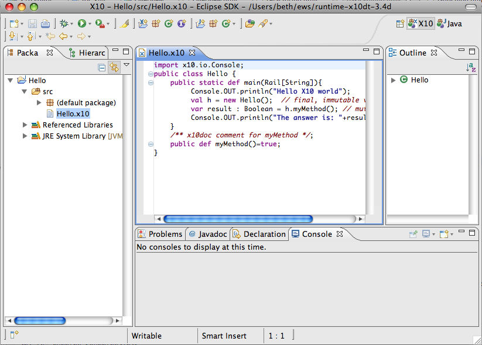

X10 projects can be created using either the Java back-end or the C++ back-end. This section describes creating a local X10 project with the Java back-end. See also Creating an X10 project with the C++ back-end.
Creating a project with the X10 Java back-end is a good introduction to using X10.
First, be sure you are in the X10 Perspective. Window > Open Perspective > Other ... and select X10.
To create a sample X10 project, Select File > New... X10 Project (Java back-end)
The X10DT creates your new project, including the source file and the editor is opened on the main source file.
Assuming that you have "Build Automatically" set, which is the default (see more below),
it also builds (compiles) it before showing you the new file, so it may take a few seconds to show you the
new source file.

Continue to Running your X10 application with the Java back-end.
Or, continue to Developing/editing your X10 source code